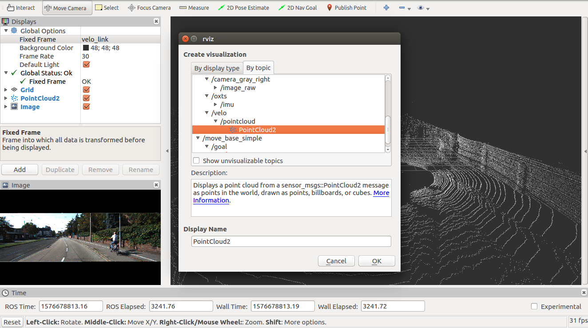

←
Visualizing the raw KITTI dataset by ROS

Let's follow the following step:
- Fist of all, we need a .bag file for working with ROS. So, we can convert your KITTI raw data to a ROS .bag file from here. And then we have a .bag file like this kitti_2011_09_26_drive_0001_synced.bag.
- Start your ROS master node by running the following command:
- Open a 2nd terminal and run the this command to playback the ROS .bag file containing the downloaded dataset.
- Open a 3rd terminal and open ROS's visualization tool rViz with a flag setting the frame to velodyne by this command:
- Inside the rViz application, click ADD and navigate to BY TOPIC. Then select /kitti/velo/pointcloud/PointCloud2. 
- Repeat step 5 for /camera_color_left, /camera_color_right, /camera_gray_left, /camera_gray_right.
- We will see something like below:
roscorerosbag play kitti_2011_09_26_drive_0001_synced.bagrosrun rviz rviz -f velodyne